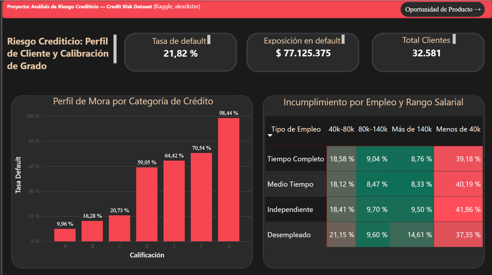
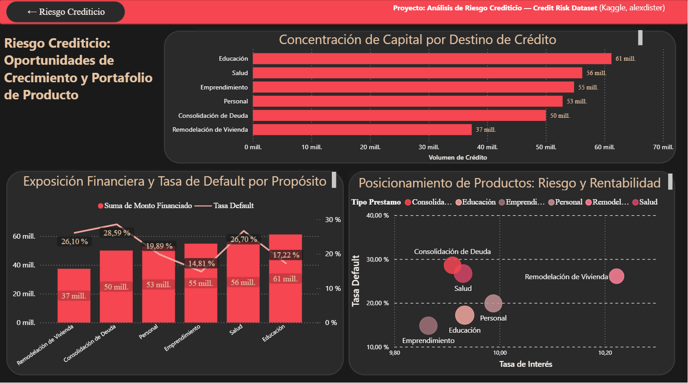

Resumen del proyecto
Este proyecto analiza el comportamiento de una cartera de préstamos para evaluar si el grado de riesgo asignado por la institución financiera refleja realmente la probabilidad de incumplimiento. Además, identifica los perfiles de clientes con mayor riesgo y detecta oportunidades de mejora en la estrategia de productos.
Herramientas utilizadas
Preguntas de negocio
- ¿El grado de riesgo (loan_grade) representa correctamente el riesgo real observado?
- ¿Qué perfiles de clientes presentan la mayor probabilidad de incumplimiento?
- ¿Qué productos financieros representan una oportunidad de crecimiento con un riesgo controlado?
Metodología técnica
Ver metodología utilizada
Se construyó un modelo relacional en MySQL compuesto por dos tablas (Cliente y Ubicación), normalizando únicamente la información geográfica tras validar que cada cliente poseía un único préstamo asociado.
El proceso ETL incluyó una tabla staging, auditorías mediante LEFT JOIN y validaciones de integridad referencial antes de la carga definitiva.
Dashboard 1 · Perfil de Riesgo

Principales hallazgos
- Loan Grade correctamente calibrado. La tasa de default aumenta de forma progresiva desde A hasta G, mostrando que el modelo de clasificación utilizado por el banco representa adecuadamente el riesgo.
- Los ingresos son el principal factor de riesgo. Los clientes con ingresos inferiores a 40k presentan tasas de incumplimiento muy superiores al resto de segmentos.
Dashboard 2 · Oportunidades de Producto

Principales hallazgos
- Educación concentra el mayor volumen de créditos. Es el producto con mayor capital financiado dentro del portafolio.
- Consolidación de deuda y Salud presentan una oportunidad de mejora. Registran una de las mayores tasas de default mientras mantienen tasas de interés relativamente bajas.
Conclusiones
- El modelo de clasificación de riesgo utilizado por la institución se encuentra correctamente calibrado.
- El ingreso del cliente tiene mayor impacto sobre el riesgo que el tipo de empleo.
- Existen oportunidades para ajustar precios y políticas de crédito en algunos productos específicos.